第 10 讲：几何（一）——纹理的高级用法与几何的两种表示
从纹理的“非颜色”用法过渡到几何的引入：理解隐式与显式表示各自擅长什么、不擅长什么。
◆ 学完这一讲，你应该能
能说出纹理在现代 GPU 中“内存 + 范围查询”的本质，并列举至少 4 种非颜色纹理应用（环境光照、凹凸/法线、程序化噪声、体渲染等）。
能解释球面环境贴图的畸变问题，以及立方体贴图如何通过方向到面的映射减少畸变。
能推导（或至少复述）凹凸贴图在局部坐标下扰动法线的公式，并说明它只影响着色、不改变几何。
能区分位移贴图与凹凸/法线贴图：前者真正移动顶点，后者只伪造光照细节。
能给出隐式表示与显式表示的定义，并各举 3 个例子。
能针对“采样”“内外测试”“光线求交”“拓扑变化”等任务，判断隐式或显式表示谁更合适。
核心结论速记
现代 GPU 中纹理 = 内存 + 范围查询（滤波），是把数据送到片元着色器的通用手段，颜色只是其中一种用法。
环境贴图用一张图记录来自各个方向的光照；球面贴图在顶部/底部畸变严重，立方体贴图用 6 个面大幅减少畸变，但需要方向到面的计算。
凹凸/法线贴图通过纹理存储高度，再在片元着色时扰动法线来伪造细节，不增加三角形。
位移贴图使用同一张高度纹理，但真正移动顶点，因此需要足够密的网格。
隐式几何用“点满足的关系”来定义（如 f(x,y,z)=0），显式几何直接给出点或通过参数映射给出点。
隐式表示做内外测试和光线求交容易，但采样出表面点难；显式表示采样容易，但内外测试难。
没有“最好”的表示，只有最适合当前任务的表示；复杂形状常需要多种表示混合。
011. 纹理不只是颜色：GPU 里的“内存 + 范围查询”
上一讲我们学了纹理映射、重心坐标和 MIPMAP。这一讲开头先补完纹理的“下半场”：纹理在现代 GPU 里早已不限于存颜色。课件给出一句很关键的话：在现代 GPU 中，纹理 = 内存 + 范围查询（filtering）。也就是说，纹理是一块可以被高效随机访问、并且自带滤波（最近邻、双线性、MIPMAP 三线性等）的显存数据；片元着色器可以通过纹理坐标去“查表”，把任意数据带进片元计算。
颜色只是最直观的一种数据。课件列举了很多应用：
- 环境光照（environment lighting）：用纹理记录来自各个方向的光，渲染时按反射方向查表；
- 存储微几何（microgeometry）：用纹理存高度或法线，伪造表面细节；
- 程序化纹理（procedural textures）：用噪声函数生成纹理，而不是从图片读取；
- 实体建模（solid modeling）：用 3D 纹理/噪声定义物体形状；
- 体渲染（volume rendering）：用 3D 纹理存储密度、温度等体数据。
理解这一点，你就不会把“纹理”等同于“贴图图片”。在引擎里，纹理本质上是 GPU 资源（UE 的 UTexture2D、Unity 的 Texture2D），材质通过采样器（sampler）去读它；采样器状态（过滤模式、寻址模式）决定了“范围查询”的行为。后面讲的凹凸贴图、环境贴图，都是这个思想的直接应用。
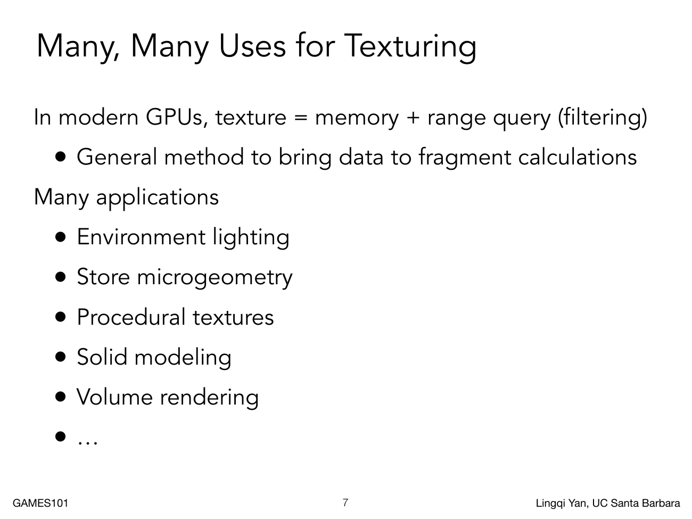
常见坑
把纹理只当颜色图 → 看到法线贴图/高度贴图时不知道它在存什么 → 记住纹理可以存任意标量/向量数据。
采样器过滤模式设错 → 法线贴图被双线性插值后法线不再归一化 → 在着色器里对采样结果做 normalize。
UE / Unity 落地
UE：纹理资源有 Compression Settings、sRGB、Filter、Address X/Y 等设置；法线贴图要选 Normalmap 压缩并关闭 sRGB。
Unity：
Texture2D的 Import Settings 里有 Texture Type（Default/Normal map）、Wrap Mode、Filter Mode；法线贴图要选 Normal map 类型。
022. 环境贴图：用一张图记录来自四面八方的光
环境贴图（environment map）的思想是：把场景周围的光照记录在一张纹理上，渲染物体时根据反射方向去查这张图，就能得到近似的光照效果。课件引用了 Blinn & Newell 1976 的工作，以及 Paul Debevec 的光探针（light probes）和 Escher 的《Hand with Reflecting Sphere》。
最直接的做法是球面环境贴图（spherical environment map）：把方向映射到球面上的经纬度，再展开成一张平面图。它就像把地球仪展开成世界地图。问题是：顶部和底部（两极）畸变严重，因为球面展开时极区被拉伸得最厉害。
为了解决畸变，工业界常用立方体贴图（cube map）：用 6 张正方形纹理分别对应立方体的 6 个面。给定一个方向向量，先判断它主要指向哪个轴，再投影到对应的面上得到 (u,v)。课件给出的判断条件是：右面（right face）满足 \(x > |y|\) 且 \(x > |z|\)。也就是说，方向的绝对值最大的分量决定它落在哪个面。这样每个面的畸变都小得多，代价是需要做“方向 → 面”的计算。
在引擎里，环境贴图通常被预计算成反射探针（reflection probe）或天空光照（sky light）。UE 的 Reflection Capture、Unity 的 Reflection Probe 都是这个思路的工程化实现。
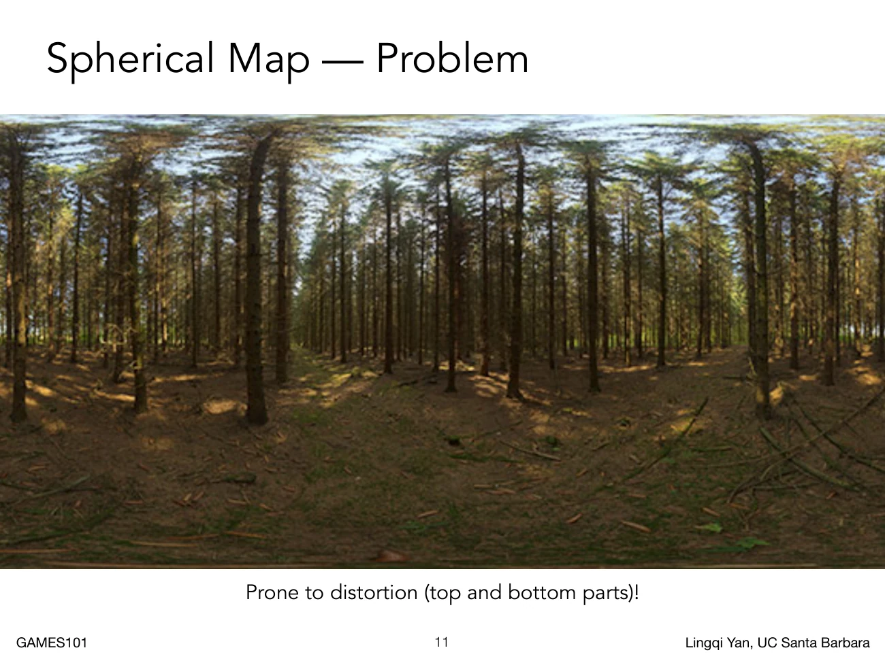
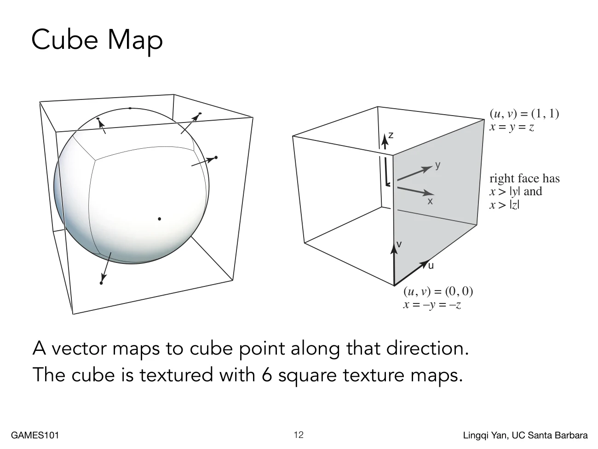
常见坑
球面贴图直接当环境光用 → 极区颜色被过度拉伸，反射看起来“糊”或“拉丝” → 改用立方体贴图或引擎的反射探针。
方向到立方体面映射时符号搞错 → 反射方向左右/上下颠倒 → 检查每个面的坐标轴与符号约定。
UE / Unity 落地
UE：Sky Light 使用立方体贴图作为环境光照；Reflection Capture 生成反射用的立方体贴图。
Unity：Reflection Probe 生成立方体贴图；Skybox 材质使用 Cubemap 资源。
033. 凹凸贴图与法线贴图：用纹理伪造几何细节
纹理既然能存任意数据，那就可以存高度（height）。凹凸贴图（bump mapping）的思想是：不增加三角形，只在每个像素着色时扰动法线，让光照看起来像有凹凸细节。课件强调：扰动只用于着色计算，不改变实际几何。
具体做法分两步：
- 用纹理存储每个 texel 的“高度偏移” \(h(u,v)\)，即相对于基础表面的相对高度；
- 在着色时，根据高度的导数扰动法线。
先看一维（flatland）的直觉：原始表面法线是 \(n(p) = (0,1)\)（假设表面沿水平方向，法线朝上）。高度函数 \(h(p)\) 在 \(p\) 点的导数近似为 \(dp = c \cdot [h(p+\Delta) - h(p)]\)，其中 \(c\) 是常数，\(\Delta\) 是采样步长。扰动后的法线是 \(n(p) = (-dp, 1)\) 再归一化。为什么是 \((-dp,1)\)？因为表面切线斜率是 \(dp\)，法线与切线垂直，所以法线方向是 \((-dp,1)\)。
推广到三维：原始法线 \(n(p) = (0,0,1)\)（局部坐标下表面沿 u、v 方向，法线沿 w 方向）。分别对 u 和 v 求高度导数：\(dp/du = c_1 \cdot [h(u+\Delta) - h(u)]\)，\(dp/dv = c_2 \cdot [h(v+\Delta) - h(v)]\)。扰动后的法线为 \(n = (-dp/du, -dp/dv, 1)\) 再归一化。
注意：这个结果是在局部坐标下的，实际使用时需要变换到世界坐标（课件提到更多细节在 HW3 的 FAQ 里）。法线贴图（normal mapping）是凹凸贴图的常见变体：纹理里直接存法线向量，省去求导步骤。
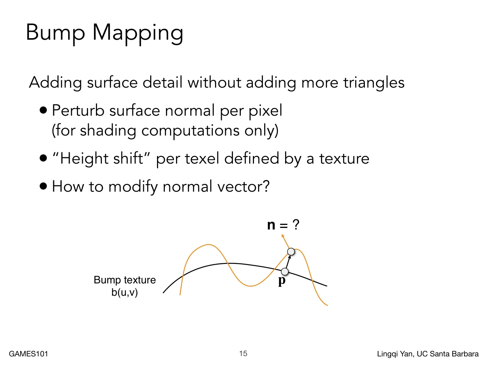
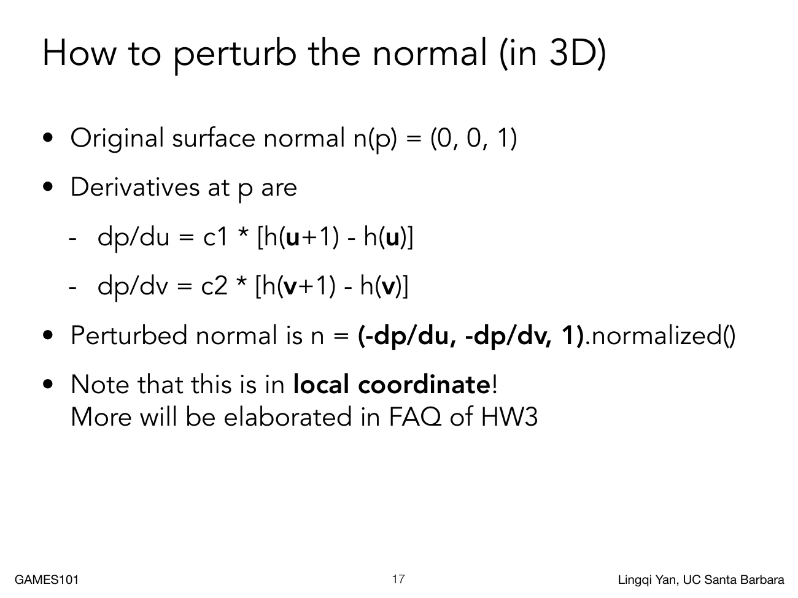
补充说明
课件中的公式是在局部坐标下推导的，实际着色前要用法线矩阵变换到世界坐标。
常见坑
法线贴图采样后没归一化 → 高光位置偏移、亮度异常 → 在片元着色器里对采样结果做 normalize。
法线贴图被当作颜色贴图做了 sRGB 解码 → 法线方向整体偏移 → 法线贴图必须使用线性空间（关闭 sRGB）。
高度导数步长 \(\Delta\) 取太大 → 细节被抹平；取太小 → 噪声放大 → 按纹理分辨率选取合适的步长。
UE / Unity 落地
UE：材质里使用 Normal 节点采样法线贴图，再接入 Normal 输入；法线贴图资源要设成 Normalmap 压缩。
Unity：Shader 里用
UnpackNormal采样法线贴图；导入时 Texture Type 选 Normal map。
凹凸贴图扰动法线的核心几行（局部坐标）（hlsl）
float h = tex2D(heightMap, uv).r;
float hu = tex2D(heightMap, uv + float2(du, 0)).r;
float hv = tex2D(heightMap, uv + float2(0, dv)).r;
float dpdu = c1 * (hu - h);
float dpdv = c2 * (hv - h);
float3 n = normalize(float3(-dpdu, -dpdv, 1.0));044. 位移贴图：真正移动顶点
凹凸/法线贴图只是“骗光照”，物体的轮廓和阴影并不会真的改变。位移贴图（displacement mapping） 使用同一张高度纹理，但真正移动顶点位置。课件把它称为更进阶的方法。
两者的区别可以用一个直观例子说明：一个光滑球体贴上凹凸贴图，看起来表面有凹凸，但球的轮廓仍然是光滑的圆；如果改用位移贴图，顶点真的被推出去，轮廓会变得坑坑洼洼。
代价是：位移贴图要求网格足够密，否则移动顶点后会出现明显的棱角或裂缝。因此它通常配合曲面细分（tessellation）使用，在着色前先把三角形细分得更密。
在引擎里，UE 的 Displacement 需要材质里开启 Tessellation（或使用 Nanite 的虚拟几何来替代）；Unity 也有 Tessellation Shader。工程上，远景用凹凸/法线贴图，近景或需要真实轮廓变化时才用位移。
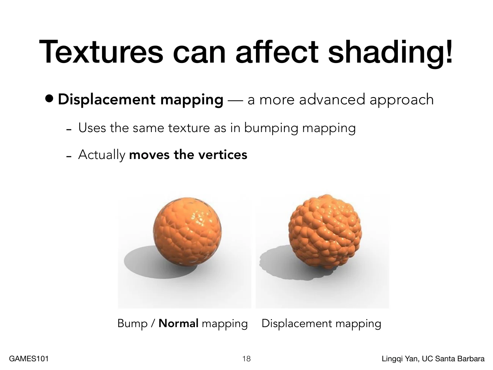
常见坑
网格太稀就开位移 → 顶点移动后出现棱角/裂缝 → 配合曲面细分或提高网格密度。
把位移贴图当法线贴图用 → 只得到光照变化，轮廓不变 → 确认材质里使用的是位移通道而非法线通道。
UE / Unity 落地
UE：材质里使用 Tessellation 配合 Displacement；Nanite 网格可用虚拟几何表现细节。
Unity：使用 Tessellation Shader 或在 HDRP 里开启 Displacement。
055. 纹理的其他高级用法：程序化噪声、预计算着色与体渲染
课件还列举了几种纹理的高级用法，帮助建立“纹理是通用数据载体”的直觉：
- 三维程序化噪声 + 实体建模：用 Perlin 噪声等程序化函数生成 3D 纹理，再用它定义物体的形状（例如大理石纹理、云朵）。Ken Perlin 因噪声函数获得奥斯卡技术奖。
- 预计算着色（precomputed shading）：把环境光遮蔽（ambient occlusion）等昂贵计算预计算到一张纹理里，渲染时直接查表。课件展示了 Autodesk 的例子：简单着色 vs 带 AO 纹理的着色。
- 3D 纹理与体渲染（volume rendering）：用 3D 纹理存储密度、温度等体数据，通过光线步进（ray marching）渲染烟雾、云、医学 CT 数据。Marc Levoy 是该领域的先驱。
这些用法的共同点是：把数据预先算好、存进纹理，运行时用采样代替计算。这是图形学里非常通用的性能优化思路，也是引擎里各种“烘焙”贴图（lightmap、AO 贴图）的理论基础。
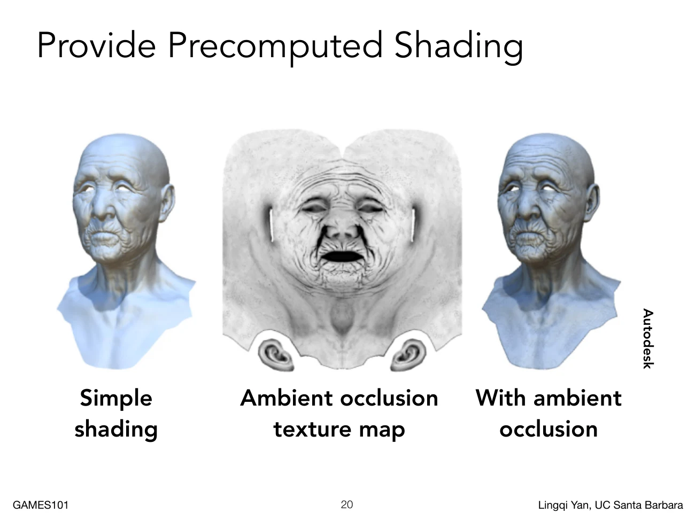
常见坑
把程序化噪声当“随机数”用 → 每帧结果不一致 → 噪声函数是确定性的，输入相同则输出相同。
体渲染步长太大 → 出现带状伪影 → 减小步长或使用抖动（dithering）。
UE / Unity 落地
UE：Lightmap、AO 贴图都是预计算着色的例子；材质里可用 Noise 节点生成程序化噪声。
Unity：Lightmap、AO 贴图；Shader Graph 里有 Simple Noise、Voronoi 等节点。
066. 几何的两种表示：隐式与显式
从这一节开始进入本课程的第二部分：几何。课件先展示了很多几何的例子（汽车、动物、人物、病毒等），然后给出核心分类：隐式（implicit） 与 显式（explicit）。
隐式表示：不直接给出点，而是给出点满足的关系。例如球体可以定义为所有满足 \(x^2 + y^2 + z^2 = 1\) 的点。更一般地，\(f(x,y,z) = 0\)。课件还提到 \(f\) 可以取正值/负值来表示内外。隐式的例子包括：代数曲面、水平集（level sets）、距离函数（distance functions）等。
显式表示：直接给出所有点，或者通过参数映射给出点。例如参数曲面 \(f(u,v) = ((2+\cos u)\cos v, (2+\cos u)\sin v, \sin u)\)。显式的例子包括：点云、多边形网格、细分曲面、NURBS 等。
课件强调：每种表示都最适合某类任务。没有“最好”的表示，只有最适合的表示。接下来几节会分别看两种表示各自擅长什么、不擅长什么。
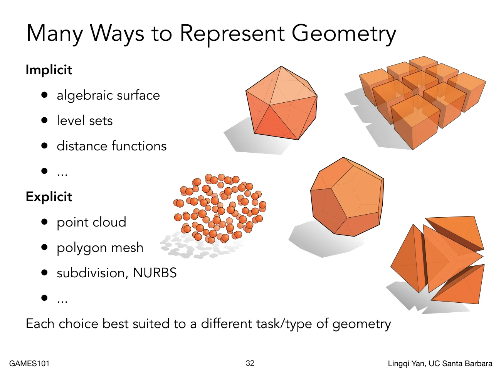
常见坑
把“隐式”理解成“看不见” → 隐式只是不直接给出点，而是给出关系 → 记住 f(x,y,z)=0 的定义。
把参数曲面和隐式曲面混淆 → 参数曲面是显式，因为它直接通过 (u,v) 映射到点。
UE / Unity 落地
UE：Static Mesh 是多边形网格（显式）；距离场（Distance Field）是隐式表示，用于软阴影和 AO。
Unity：Mesh 是多边形网格（显式）；有符号距离场（SDF）可用于渲染和碰撞。
077. 隐式 vs 显式：采样、内外测试与任务匹配
这一节用具体任务对比两种表示。
采样（找出表面上的点）：
- 隐式：难。例如 \(f(x,y,z) = (2 - \sqrt{x^2+y^2})^2 + z^2 - 1 = 0\)，要找出满足的点并不直观，通常需要数值方法。
- 显式：容易。给定参数曲面 \(f(u,v)\)，直接代入 (u,v) 就能得到点。
内外测试（判断一个点是否在物体内部）：
- 隐式：容易。把点代入 \(f(x,y,z)\)，看符号即可。课件例子：\(f(x,y,z) = x^2 + y^2 + z^2 - 1\)，判断 \((1/4, 1/4, 1/4)\) 是否在内部：代入得 \(3/16 - 1 < 0\)，所以在内。
- 显式：难。需要先判断点是否在表面上，再判断内外，通常很麻烦。
光线求交：隐式通常更容易（解方程），显式（网格）需要逐三角形求交，但有加速结构。
拓扑变化：隐式容易处理（例如流体融合），显式网格需要重新拓扑。
课件引用 Pixar 的 David Baraff 的话：“I hate meshes. I cannot believe how hard this is. Geometry is hard.” 说明几何本身就是一个困难的话题。结论是：最佳表示取决于任务。
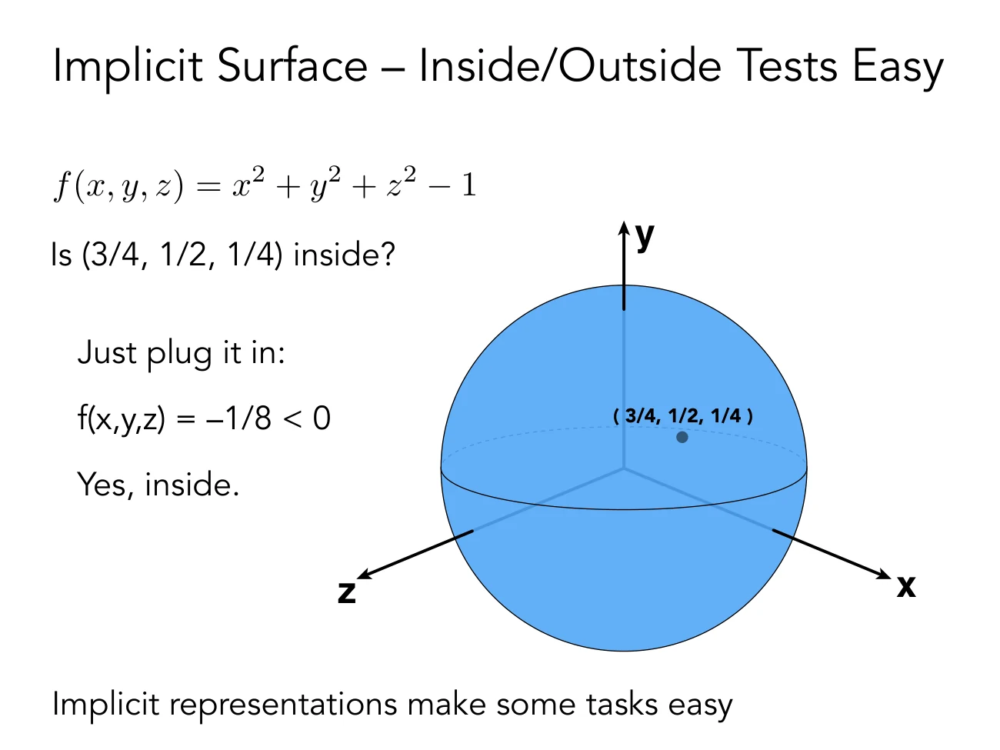
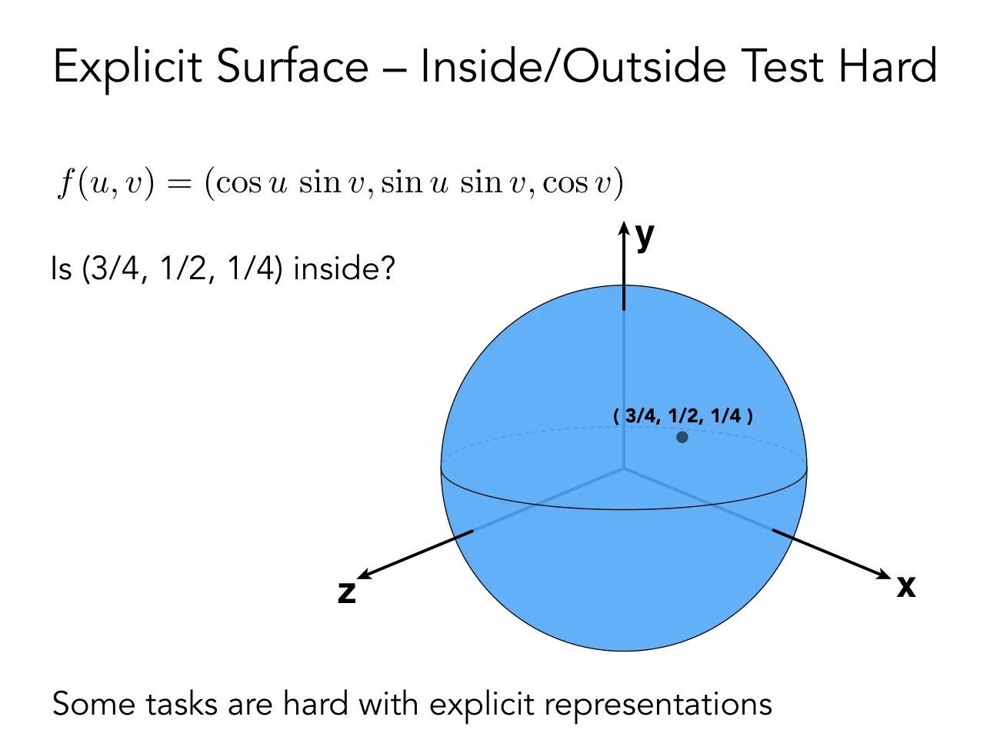
常见坑
认为隐式一定比显式好 → 隐式采样难、复杂形状难建模 → 根据任务选择表示。
内外测试时忘记归一化或符号约定 → 判断结果相反 → 明确 f 的正负号约定（通常负为内）。
UE / Unity 落地
UE：距离场（Distance Field）用于软阴影/AO，是隐式；碰撞检测常用凸包或网格，是显式。
Unity：Physics 碰撞体常用 Mesh Collider（显式）；SDF 用于渲染。
088. 更多隐式表示：代数曲面、CSG、距离函数、水平集与分形
课件进一步展开隐式表示的具体类型：
- 代数曲面（algebraic surfaces）：曲面是多项式 \(f(x,y,z) = 0\) 的零集。简单形状容易，复杂形状难。
- 构造实体几何（CSG）：用布尔运算（并、交、差）组合隐式几何。例如 \(\max(f_1, f_2)\) 表示交集，\(\min(f_1, f_2)\) 表示并集，\(\max(f_1, -f_2)\) 表示差集。
- 距离函数（distance functions）：给出任意点到物体的最小距离（可带符号）。距离函数可以平滑混合：\(d_1 + d_2\) 或线性插值，得到“移动的边界”。课件展示了用纯距离函数渲染的场景（Inigo Quilez 的 raymarching 示例）。
- 水平集（level set）：用网格存储近似函数值，表面是插值后等于零的位置。适合描述复杂形状（如医学 CT、流体模拟），控制更直观。
- 分形（fractals）：自相似，细节在所有尺度上存在，适合描述自然现象，但难以控制形状。
最后课件总结隐式的优缺点：
- 优点：描述紧凑（一个函数）、某些查询容易（内外、距离）、适合光线求交、简单形状精确无采样误差、容易处理拓扑变化（如流体）。
- 缺点：难以建模复杂形状。
这些概念在引擎里也有对应：UE 的 Distance Field、Unity 的 SDF、以及各种程序化建模工具。
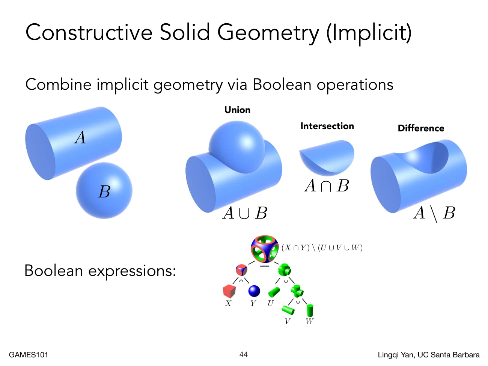
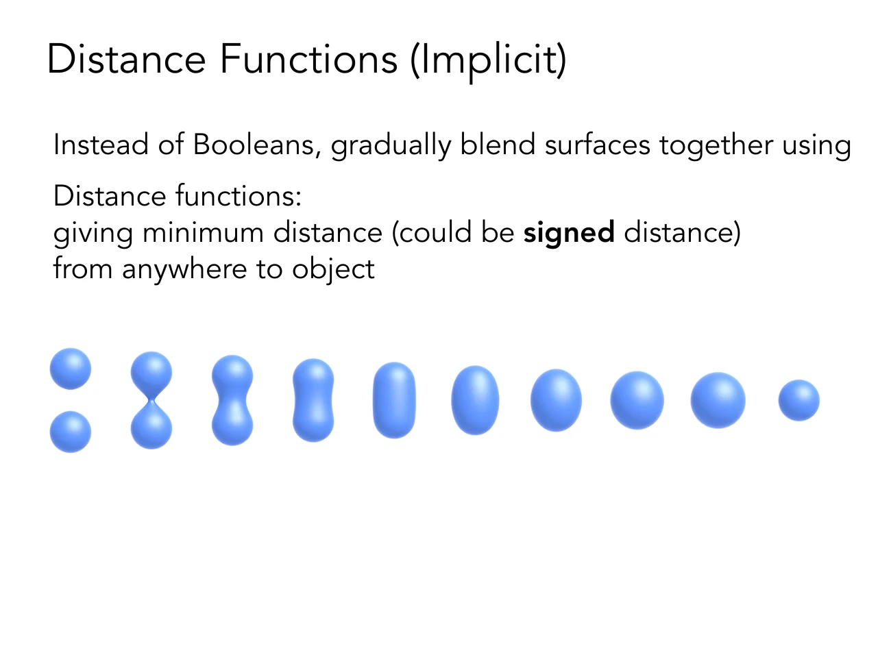
常见坑
CSG 布尔运算的 min/max 用反 → 并集变交集 → 记住 min 对应并集、max 对应交集。
水平集网格分辨率太低 → 表面出现阶梯状伪影 → 提高分辨率或使用插值。
UE / Unity 落地
UE：Distance Field 用于软阴影、AO；CSG 可用 Geometry Script 或建模模式实现。
Unity：ProBuilder 支持 CSG 布尔运算；SDF 可用于渲染。
引擎对照表
| 概念 / 效果 | Unreal Engine | Unity |
|---|---|---|
环境贴图/反射 | Sky Light、Reflection Capture | Reflection Probe、Skybox |
法线/凹凸贴图 | 材质 Normal 输入、Normalmap 压缩 | Normal map 导入类型、UnpackNormal |
位移 | Tessellation + Displacement、Nanite | Tessellation Shader、HDRP Displacement |
预计算 AO | Lightmap、AO 贴图 | Lightmap、AO 贴图 |
隐式几何/距离场 | Distance Field（软阴影/AO） | SDF 渲染、Distance Field |
显式几何/网格 | Static Mesh | Mesh、Mesh Collider |
术语双语表
| English | 中文 | 说明 |
|---|---|---|
| Environment Map | 环境贴图 | 记录来自各个方向光照的纹理。 |
| Cube Map | 立方体贴图 | 用 6 个面存储环境，减少球面贴图的极区畸变。 |
| Bump Mapping | 凹凸贴图 | 用高度纹理扰动法线，伪造表面细节，不改变几何。 |
| Normal Mapping | 法线贴图 | 纹理直接存储法线向量，是凹凸贴图的常见变体。 |
| Displacement Mapping | 位移贴图 | 用高度纹理真正移动顶点，改变轮廓。 |
| Implicit Surface | 隐式曲面 | 用 f(x,y,z)=0 的关系定义曲面，不直接给出点。 |
| Explicit Surface | 显式曲面 | 直接给出点或通过参数映射给出点。 |
| Distance Function | 距离函数 | 给出任意点到物体的最小距离（可带符号）。 |
| Level Set | 水平集 | 用网格存储函数值，表面是插值后为零的位置。 |
| CSG | 构造实体几何 | 用布尔运算组合隐式几何。 |
课后练习
01 解释为什么球面环境贴图在顶部和底部畸变严重，而立方体贴图能减少畸变。
查看答案
提示：
从球面展开的几何形变和立方体面的投影角度考虑。
球面贴图把球面按经纬度展开成平面，极区（顶部和底部）在展开时被严重拉伸，导致畸变。立方体贴图用 6 个平面分别对应立方体的面，每个面只覆盖约 90 度的视场，投影畸变小得多；方向向量按绝对值最大的分量映射到对应面，避免了极区拉伸。
02 在局部坐标下，原始法线为 (0,0,1)，高度函数对 u 的导数为 dp/du = 0.2，对 v 的导数为 dp/dv = -0.1。求扰动后的法线（归一化前和归一化后）。
查看答案
提示：
使用公式 n = (-dp/du, -dp/dv, 1)。
归一化前：n = (-0.2, 0.1, 1)。归一化：长度 = sqrt(0.04 + 0.01 + 1) = sqrt(1.05) ≈ 1.0247，所以 n ≈ (-0.195, 0.098, 0.976)。
03 判断点 (1/4, 1/4, 1/4) 是否在隐式曲面 f(x,y,z) = x^2 + y^2 + z^2 - 1 = 0 的内部。
查看答案
提示：
代入计算 f 的值，负值表示内部。
f(1/4,1/4,1/4) = 3/16 - 1 = -13/16 < 0，所以点在内部。
04 举出两个任务，分别说明隐式表示和显式表示更合适，并解释原因。
查看答案
提示：
考虑内外测试、采样、光线求交、拓扑变化等。
隐式更合适：内外测试（代入 f 看符号即可）、光线求交（解方程）。显式更合适：采样表面点（直接代入参数 (u,v)）、渲染网格（GPU 直接绘制三角形）。
05 在引擎里，法线贴图为什么必须关闭 sRGB 解码？如果忘记关闭会有什么现象？
查看答案
提示：
法线向量是线性数据，不是颜色。
法线贴图存储的是方向向量，属于线性数据；sRGB 解码会对其做非线性变换，导致法线方向整体偏移。现象是光照方向错误、高光位置偏移、表面看起来“发灰”或“发蓝”。